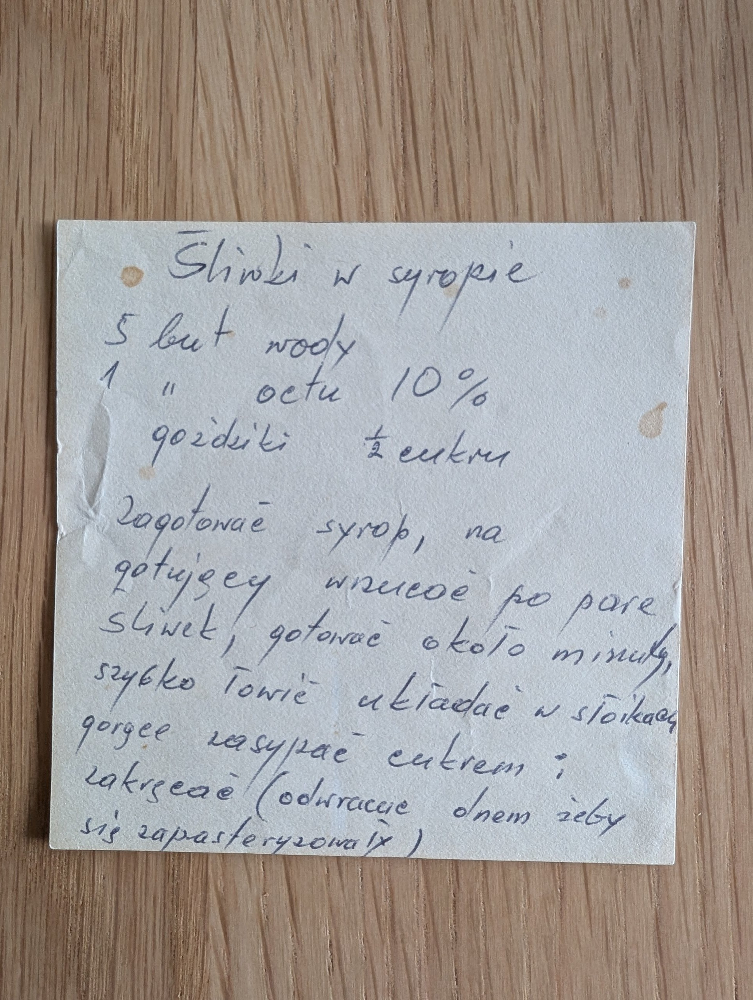

Śliwki w syropie

Składniki
- 5 butelek wody
- 1 butelka octu 10%
- goździki
- ½ cukru
- śliwki
Przygotowanie
- Zagotować syrop.
- Na gotujący wrzucać po parę śliwek, gotować około minuty.
- Szybko łowić, układać w słoikach.
- Gorące zasypać cukrem i zakręcać.
- Odwracać dnem do góry, żeby się zapasteryzowały.
Oryginalny zapis
Śliwki w syropie 5 but wody 1 " octu 10% goździki ½ cukru Zagotować syrop, na gotującej wrzucać po parę śliwek, gotować około minuty, szybko łowić układać w słoikach gorące zasypać cukrem i zakręcać (odwracać dnem żeby się zapasteryzowały)